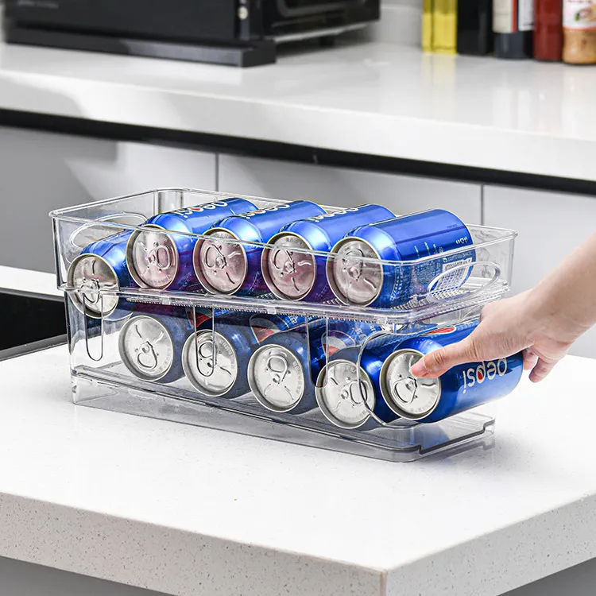
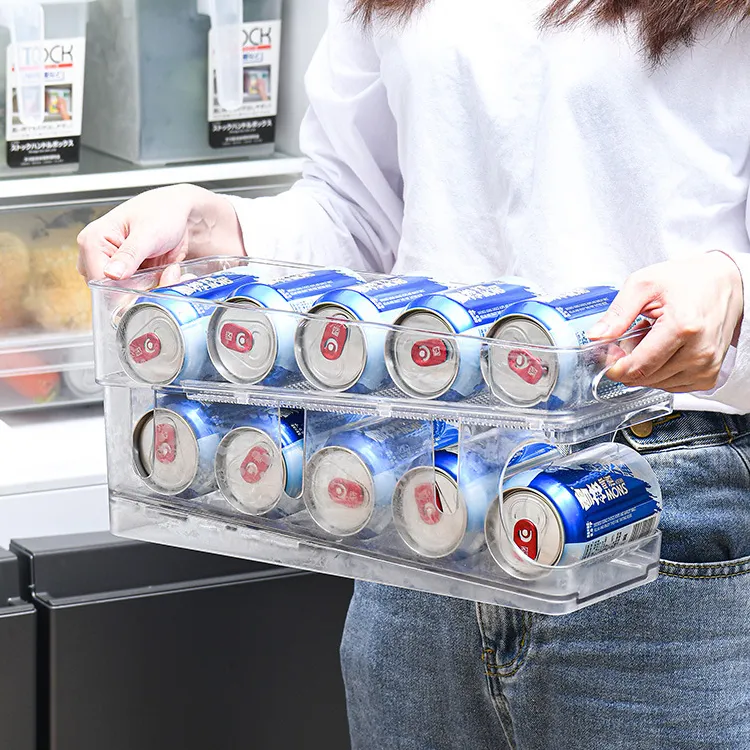

Silicon liner for air fryer


- Advantages of cooking with silicone tray:
- 1- Non-stick surface makes them easy to clean.
- 2- Silicone trays come in different sizes and shapes.
- 3- They distribute heat evenly, ensuring even cooking.
- 4- You don't need to use oil, making cooking healthier.
- 5- Silicone trays are cost-effective, reusable, and environmentally friendly. Buy in Amazon
Rack organizer for drink


More easy
- Here are 3 advantages of using a soda can organizer:
- 1- Space-saving: A soda can organizer helps to save space by neatly organizing and stacking cans.
- 2- Easy access: It makes cans easily accessible, eliminating the need to dig through cluttered shelves to find a particular can.
- 3- An organized soda can organizer saves time as it allows you to quickly identify what is available and what needs to be restocked. Buy in Amazon
Follow us in our social media
-
Facebook
-
Instagram
-
Linekdin